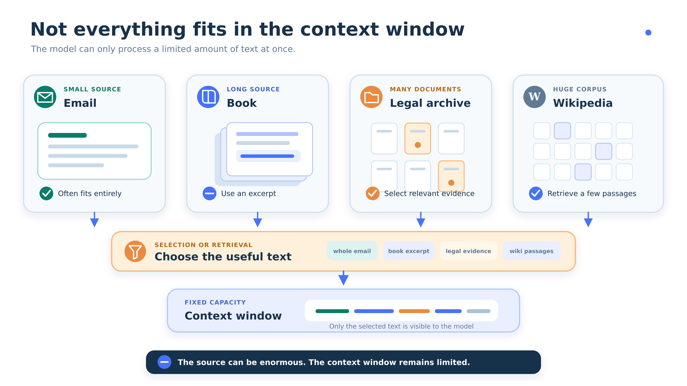
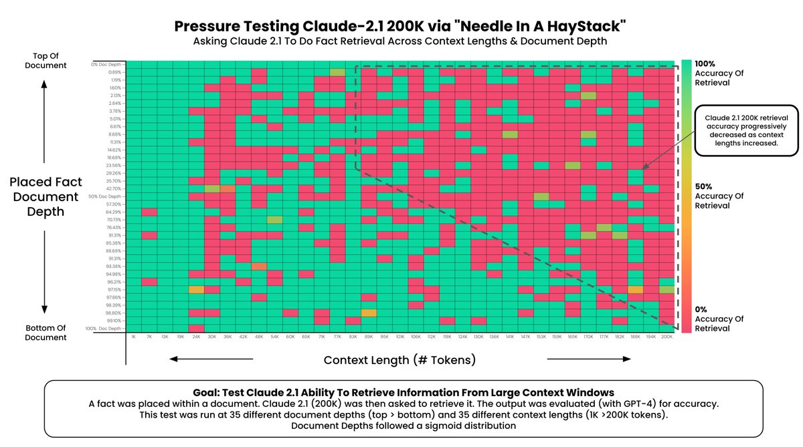
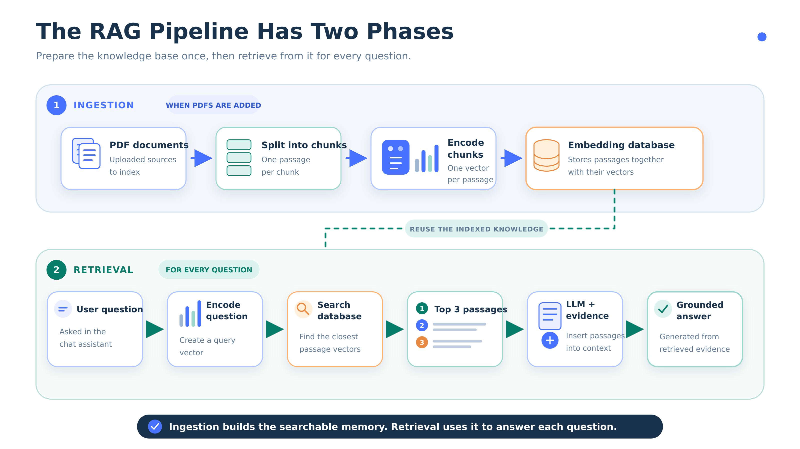
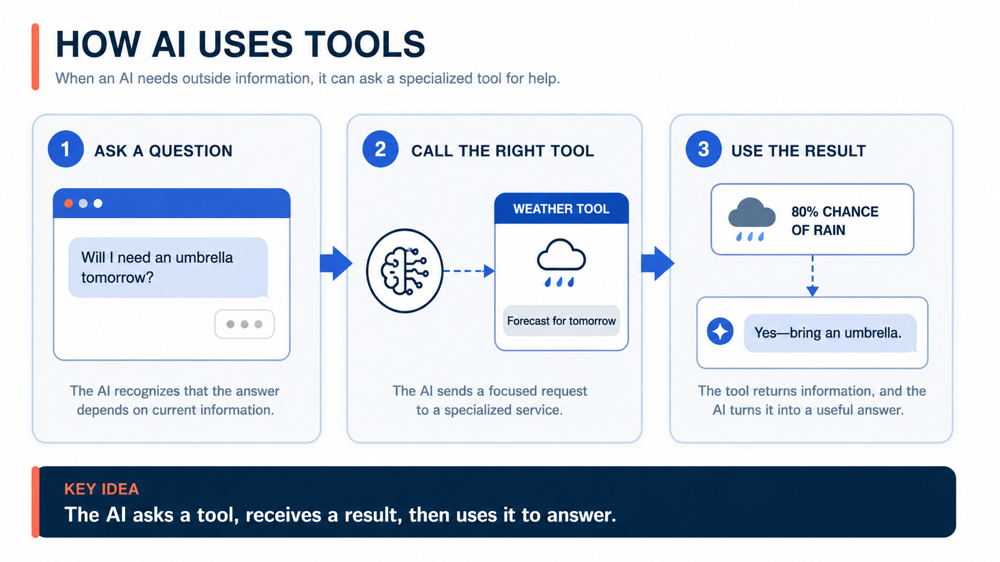
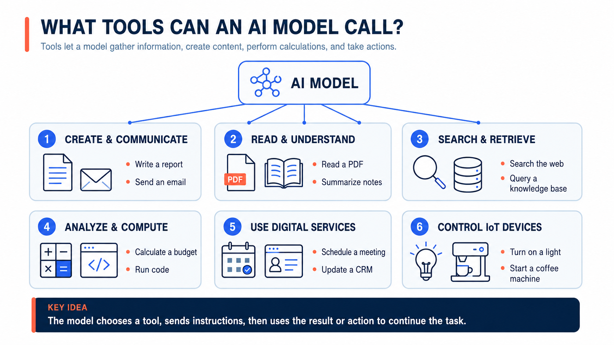
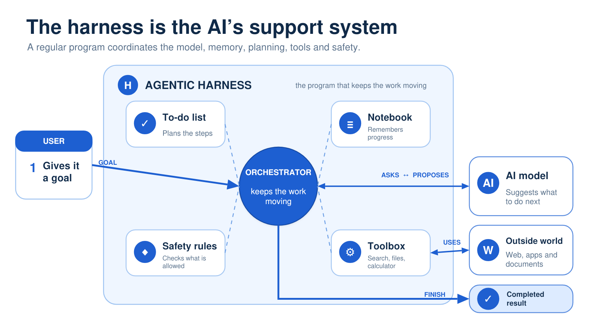
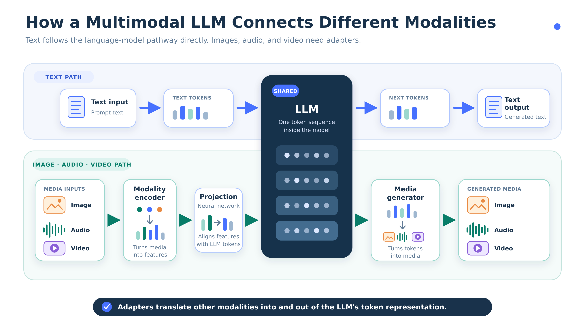
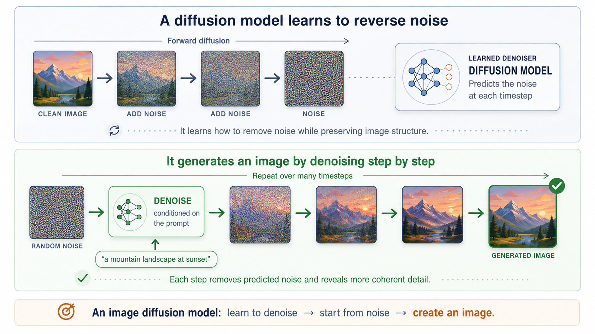
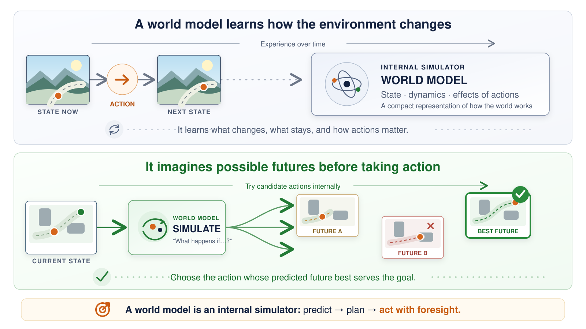

SCIENCES PO
INTRODUCTORY AI COURSE · SESSION 6
From Model to Agent, and Where AI Goes Next
Session 6 · Retrieval, tools, loops, and consequences
PRESENTED BY
Evan Dufraisse
27 August 2026

REASONING & AGENTS
SESSION 6
Not Everything Fits in the Context

REASONING & AGENTS
SESSION 6
More Context Is Not Always Better
More tokens
You can include more material, but the model must still find what matters.
•
Higher cost
•
Higher latency
•
More distraction
Better selection
A smaller, relevant context can outperform a giant noisy prompt.
•
Cheaper
•
Faster
•
Easier to ground
REASONING & AGENTS
SESSION 6
More Context Is Not Always Better - Cost

REASONING & AGENTS
SESSION 6
Needle in a Haystack

REASONING & AGENTS
SESSION 6
The Retrieval Augmented Generation (RAG) Pipeline: Two Phases

REASONING & AGENTS
SESSION 6
The RAG Pipeline - Ingestion
REASONING & AGENTS
SESSION 6
The RAG Pipeline - Retrieval
REASONING & AGENTS
SESSION 6
RAG Changes the Context, Not the Model
The system becomes better informed at inference time, but the underlying weights stay the same.
•
No retraining is required
•
The gain comes from external evidence
•
Grounding is assembled, not baked in
REASONING & AGENTS
SESSION 6
COMPARISON
A Fixed Database Is Not the Live World
Fixed corpus
Useful when the source set is known and curated.
Live environment
Needed when the answer depends on current conditions.
REASONING & AGENTS
SESSION 6
Get the Weather for Tomorrow?

REASONING & AGENTS
SESSION 6
PIPELINE
The Program Executes the Operation
Prompt
The task arrives
Tool call
The model emits arguments
Agent Program
The program validates and runs
Observation
The result comes back
Reply
The model responds again
REASONING & AGENTS
SESSION 6
REASONING & AGENTS
SESSION 6
Making a Web Search
REASONING & AGENTS
SESSION 6
Beyond Information Retrieval
REASONING & AGENTS
SESSION 6
What tools can an AI model call?

REASONING & AGENTS
SESSION 6
Agentic Inception – Agents can be tools
•Context windows are limited, and long contexts are expensive.
•Models generally perform better when focused on a single goal.
•The main model needs only the final result or action feedback. Not the process used to produce it.
Motivations:

REASONING & AGENTS
SESSION 6
Agentic Inception – Agentic Harness
REASONING & AGENTS
SESSION 6
REASONING & AGENTS
SESSION 6
COMPARISON
Level of Autonomy is A Choice
Human-gated
The system suggests, asks, or waits for approval.
•
Higher oversight
•
Slower throughput
•
Easier audit
Self-directed
The system acts within defined limits.
•
More speed
•
More risk
•
Needs stronger controls
REASONING & AGENTS
SESSION 6
DEFINITION
Errors Compound Across Steps
At 95% reliability per step, twenty correct steps in a row happen only about 36% of the time.
Why it matters
•
0.95^20 ≈ 36%
•
Small errors become large workflow risk
REASONING & AGENTS
SESSION 6
TAKEAWAY
Producing the File Is Not Enough
A capable system must verify the artifact it created rather than treating file existence as success.
•
Render the output
•
Inspect the result
•
Revise if needed
REASONING & AGENTS
SESSION 6
COMPARISON
Multimodality Inside the Loop
Text-only loop
The system can describe what it intended to make.
•
Weak visual verification
•
Harder artifact checking
Vision-enabled loop
The system can inspect the rendered artifact it actually produced.
•
Check layout
•
Spot missing elements
•
Revise from evidence
REASONING & AGENTS
SESSION 6
How a Multimodal LLM Connects Different Modalities?

REASONING & AGENTS
SESSION 6
Other AI Active Development – Image Generation

REASONING & AGENTS
SESSION 6
Other AI Active Development – World Models

REASONING & AGENTS
SESSION 6
Wrapping Up
Agentic and Reasoning systems extend language models with context, tools and feedback, allowing to complete complex tasks
EXTENDING THE MODEL
AGENCY & RELIABILITY
REASONING CAN BE TRAINED
Prompting and reward signals improve multi-step problem solving.
RAG TO ADD OFFLINE INFORMATION
RAG selects external evidence without retraining the model.
TOOLS CONNECT MODELS TO THE WORLD
Programs fetch live information and execute validated actions.
AGENTS LOOP TOWARD A GOAL
Reasoning, action and observation let a system adapt across steps.
THE HARNESS SETS AUTONOMY
Permissions, memory, subagents and approval gates bound what can happen.
VERIFICATION CLOSES THE LOOP
Errors compound, so systems must inspect outputs and revise from evidence.
REASONING & AGENTS
SESSION 6
Thank You!